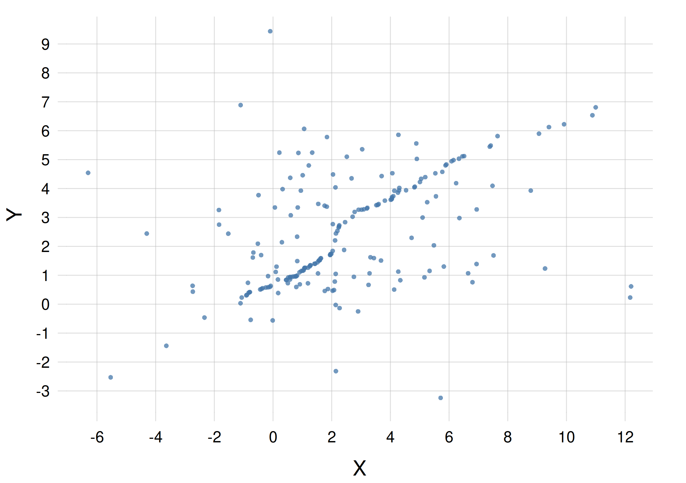

16 Marginal probability distributions
\(\DeclarePairedDelimiter{\set}{\{}{\}}\)
16.1 Marginal probability: neglecting some quantities
In some situations an agent has a joint distribution of degrees of belief for the possible values of a joint quantity, but it needs to consider its belief in the value of one component quantity alone, irrespective of what the values for the other components quantities might be.
Consider for instance the joint probability for the next-patient arrival scenario of table 15.1 from § 15.2, with joint quantity \((U,T)\). We may be interested in the probability that the next patient will need \({\small\verb;urgent;}\) care, independently of how the patient is transported to the hospital. This probability can be found, as usual, by analysing the problem in terms of sentences and using the basic rules of inference from § 8.4.
The sentence of interest is “The next patient will require urgent care”, or in symbols
\[U \mathclose{}\mathord{\nonscript\mkern 0mu\textrm{\small=}\nonscript\mkern 0mu}\mathopen{}{\small\verb;urgent;}\]
This sentence is equivalent to “The next patient will require urgent care, and will arrive by ambulance, helicopter, or other means”, or in symbols
\[ U \mathclose{}\mathord{\nonscript\mkern 0mu\textrm{\small=}\nonscript\mkern 0mu}\mathopen{}{\small\verb;urgent;}\land ( T \mathclose{}\mathord{\nonscript\mkern 0mu\textrm{\small=}\nonscript\mkern 0mu}\mathopen{}{\small\verb;ambulance;}\lor T \mathclose{}\mathord{\nonscript\mkern 0mu\textrm{\small=}\nonscript\mkern 0mu}\mathopen{}{\small\verb;helicopter;}\lor T \mathclose{}\mathord{\nonscript\mkern 0mu\textrm{\small=}\nonscript\mkern 0mu}\mathopen{}{\small\verb;other;} ) \]
Using the derived rules of Boolean algebra of § 9.2 we can rewrite this sentence in yet another way:
\[ (U \mathclose{}\mathord{\nonscript\mkern 0mu\textrm{\small=}\nonscript\mkern 0mu}\mathopen{}{\small\verb;urgent;}\land T \mathclose{}\mathord{\nonscript\mkern 0mu\textrm{\small=}\nonscript\mkern 0mu}\mathopen{}{\small\verb;ambulance;}) \lor (U \mathclose{}\mathord{\nonscript\mkern 0mu\textrm{\small=}\nonscript\mkern 0mu}\mathopen{}{\small\verb;urgent;}\land T \mathclose{}\mathord{\nonscript\mkern 0mu\textrm{\small=}\nonscript\mkern 0mu}\mathopen{}{\small\verb;helicopter;}) \lor (U \mathclose{}\mathord{\nonscript\mkern 0mu\textrm{\small=}\nonscript\mkern 0mu}\mathopen{}{\small\verb;urgent;}\land T \mathclose{}\mathord{\nonscript\mkern 0mu\textrm{\small=}\nonscript\mkern 0mu}\mathopen{}{\small\verb;other;}) \]
This last sentence is an or of mutually exclusive sentences. Its probability is therefore given by the or rule, with the and terms being zero (we shall now use the comma “\(\mathbin{\mkern-0.5mu,\mkern-0.5mu}\)” for and):
\[ \begin{aligned} &\mathrm{P}(U \mathclose{}\mathord{\nonscript\mkern 0mu\textrm{\small=}\nonscript\mkern 0mu}\mathopen{}{\small\verb;urgent;}\nonscript\:\vert\nonscript\:\mathopen{} \mathsfit{I}_{\text{H}}) \\[1ex] &\quad{}= \mathrm{P}\bigl[ (U \mathclose{}\mathord{\nonscript\mkern 0mu\textrm{\small=}\nonscript\mkern 0mu}\mathopen{}{\small\verb;urgent;}\mathbin{\mkern-0.5mu,\mkern-0.5mu}T \mathclose{}\mathord{\nonscript\mkern 0mu\textrm{\small=}\nonscript\mkern 0mu}\mathopen{}{\small\verb;ambulance;}) \lor (U \mathclose{}\mathord{\nonscript\mkern 0mu\textrm{\small=}\nonscript\mkern 0mu}\mathopen{}{\small\verb;urgent;}\mathbin{\mkern-0.5mu,\mkern-0.5mu}T \mathclose{}\mathord{\nonscript\mkern 0mu\textrm{\small=}\nonscript\mkern 0mu}\mathopen{}{\small\verb;helicopter;}) \lor (U \mathclose{}\mathord{\nonscript\mkern 0mu\textrm{\small=}\nonscript\mkern 0mu}\mathopen{}{\small\verb;urgent;}\mathbin{\mkern-0.5mu,\mkern-0.5mu}T \mathclose{}\mathord{\nonscript\mkern 0mu\textrm{\small=}\nonscript\mkern 0mu}\mathopen{}{\small\verb;other;}) \nonscript\:\vert\nonscript\:\mathopen{} \mathsfit{I}_{\text{H}} \bigr] \\[1ex] &\quad{}=\begin{aligned}[t] &\mathrm{P}(U \mathclose{}\mathord{\nonscript\mkern 0mu\textrm{\small=}\nonscript\mkern 0mu}\mathopen{}{\small\verb;urgent;}\mathbin{\mkern-0.5mu,\mkern-0.5mu}T \mathclose{}\mathord{\nonscript\mkern 0mu\textrm{\small=}\nonscript\mkern 0mu}\mathopen{}{\small\verb;ambulance;}\nonscript\:\vert\nonscript\:\mathopen{} \mathsfit{I}_{\text{H}}) +{} \\ &\quad\mathrm{P}(U \mathclose{}\mathord{\nonscript\mkern 0mu\textrm{\small=}\nonscript\mkern 0mu}\mathopen{}{\small\verb;urgent;}\mathbin{\mkern-0.5mu,\mkern-0.5mu}T \mathclose{}\mathord{\nonscript\mkern 0mu\textrm{\small=}\nonscript\mkern 0mu}\mathopen{}{\small\verb;helicopter;}\nonscript\:\vert\nonscript\:\mathopen{} \mathsfit{I}_{\text{H}}) +{} \\ &\quad\mathrm{P}(U \mathclose{}\mathord{\nonscript\mkern 0mu\textrm{\small=}\nonscript\mkern 0mu}\mathopen{}{\small\verb;urgent;}\mathbin{\mkern-0.5mu,\mkern-0.5mu}T \mathclose{}\mathord{\nonscript\mkern 0mu\textrm{\small=}\nonscript\mkern 0mu}\mathopen{}{\small\verb;other;}\nonscript\:\vert\nonscript\:\mathopen{} \mathsfit{I}_{\text{H}}) \end{aligned} \end{aligned} \]
We have found that the probability for a value of the urgency quantity \(U\), independently of the value of the transportation quantity \(T\), can be calculated by summing all joint probabilities with all possible \(T\) values. Using the \(\sum\)-notation we can write this compactly:
\[ \mathrm{P}(U \mathclose{}\mathord{\nonscript\mkern 0mu\textrm{\small=}\nonscript\mkern 0mu}\mathopen{}{\small\verb;urgent;}\nonscript\:\vert\nonscript\:\mathopen{} \mathsfit{I}_{\text{H}}) = \sum_{t} \mathrm{P}(U \mathclose{}\mathord{\nonscript\mkern 0mu\textrm{\small=}\nonscript\mkern 0mu}\mathopen{}{\small\verb;urgent;}\mathbin{\mkern-0.5mu,\mkern-0.5mu}T\mathclose{}\mathord{\nonscript\mkern 0mu\textrm{\small=}\nonscript\mkern 0mu}\mathopen{}t \nonscript\:\vert\nonscript\:\mathopen{} \mathsfit{I}_{\text{H}}) \]
where it’s understood that the sum index \(t\) runs over the values \(\set{{\small\verb;ambulance;}, {\small\verb;helicopter;}, {\small\verb;other;}}\).
This is called a marginal probability.
Considering now a more generic case of a joint quantity with component quantities \(\color[RGB]{34,136,51}X\) and \(\color[RGB]{238,102,119}Y\), the probability for a specific value of \(\color[RGB]{34,136,51}X\), conditional on some information \(\mathsfit{I}\) and irrespective of what the value of \(\color[RGB]{238,102,119}Y\) might be, is given by
\[ \mathrm{P}({\color[RGB]{34,136,51}X\mathclose{}\mathord{\nonscript\mkern 0mu\textrm{\small=}\nonscript\mkern 0mu}\mathopen{}x}\nonscript\:\vert\nonscript\:\mathopen{} \mathsfit{I}) = \sum_{\color[RGB]{238,102,119}y} \mathrm{P}({\color[RGB]{238,102,119}Y\mathclose{}\mathord{\nonscript\mkern 0mu\textrm{\small=}\nonscript\mkern 0mu}\mathopen{}y} \mathbin{\mkern-0.5mu,\mkern-0.5mu}{\color[RGB]{34,136,51}X\mathclose{}\mathord{\nonscript\mkern 0mu\textrm{\small=}\nonscript\mkern 0mu}\mathopen{}x} \nonscript\:\vert\nonscript\:\mathopen{} \mathsfit{I}) \]
You may notice the similarity with the expression for a combined probability from § 14.5. Indeed a marginal probability is just a special case of a combined probability: we are combining all probabilities that exhaust the possibilities for the sentence \(Y\mathclose{}\mathord{\nonscript\mkern 0mu\textrm{\small=}\nonscript\mkern 0mu}\mathopen{}y\).
16.2 Marginal density distributions
In the example of the previous section, suppose now that the quantities \(\color[RGB]{34,136,51}X\) and \(\color[RGB]{238,102,119}Y\) are continuous. Then the joint probability is expressed by a density:
\[\mathrm{p}({\color[RGB]{238,102,119}Y\mathclose{}\mathord{\nonscript\mkern 0mu\textrm{\small=}\nonscript\mkern 0mu}\mathopen{}y} \mathbin{\mkern-0.5mu,\mkern-0.5mu}{\color[RGB]{34,136,51}X\mathclose{}\mathord{\nonscript\mkern 0mu\textrm{\small=}\nonscript\mkern 0mu}\mathopen{}x} \nonscript\:\vert\nonscript\:\mathopen{} \mathsfit{I})\]
with the usual meaning. The marginal probability density for \(\color[RGB]{34,136,51}X\) is still given by a sum, but this sum occurs over intervals of values of \(\color[RGB]{238,102,119}Y\), intervals with very small widths. As a consequence the sum will have a very large number of terms. To remind ourselves of this fact, which can be very important in some situations, we use a different notation in terms of integrals:
\[ \mathrm{p}({\color[RGB]{34,136,51}X\mathclose{}\mathord{\nonscript\mkern 0mu\textrm{\small=}\nonscript\mkern 0mu}\mathopen{}x}\nonscript\:\vert\nonscript\:\mathopen{} \mathsfit{I}) = \int_{\color[RGB]{238,102,119}\varUpsilon} \mathrm{p}({\color[RGB]{238,102,119}Y\mathclose{}\mathord{\nonscript\mkern 0mu\textrm{\small=}\nonscript\mkern 0mu}\mathopen{}y} \mathbin{\mkern-0.5mu,\mkern-0.5mu}{\color[RGB]{34,136,51}X\mathclose{}\mathord{\nonscript\mkern 0mu\textrm{\small=}\nonscript\mkern 0mu}\mathopen{}x} \nonscript\:\vert\nonscript\:\mathopen{} \mathsfit{I})\, \mathrm{d}{\color[RGB]{238,102,119}y} \]
where \(\color[RGB]{238,102,119}\varUpsilon\) represents the domain of the quantity \(\color[RGB]{238,102,119}Y\).
This is called a marginal probability density.
The appearance of integrals is sometimes extremely useful, because it allows us to use the theory of integration to calculate marginal probabilities quickly and precisely, instead of having to compute sums of a large numbers of small terms – a procedure that can be computationally expensive and lead to numerical errors owing to underflow or similar computation problems.
16.3 Marginal probabilities and scatter plots
In the previous chapters we have often discussed scatter plots (§ 14.4.2, § 15.6.2) for representing probability distributions of various kinds: discrete, continuous, joint, mixed, and so on.
One more advantage of representing a joint distribution with a scatter plot is that it can be quickly modified to represent any marginal distribution, again with a scatter plot. Whereas the use of a surface plot would require analytical calculations or approximations thereof.
Consider for instance the joint probability density from § 15.4, represented by the formula
\[ \mathrm{p}(X\mathclose{}\mathord{\nonscript\mkern 0mu\textrm{\small=}\nonscript\mkern 0mu}\mathopen{}x \mathbin{\mkern-0.5mu,\mkern-0.5mu}Y\mathclose{}\mathord{\nonscript\mkern 0mu\textrm{\small=}\nonscript\mkern 0mu}\mathopen{}y \nonscript\:\vert\nonscript\:\mathopen{} \mathsfit{I}) = \tfrac{3}{8\,\pi}\, \mathrm{e}^{-\frac{1}{2} (x-1)^2-(y-1)^2}+ \tfrac{3}{64\,\pi}\,\mathrm{e}^{-\frac{1}{32} (x-2)^2-\frac{1}{2} (y-4)^2}+ \tfrac{1}{40\,\pi}\,\mathrm{e}^{-\frac{1}{8} (x-5)^2-\frac{1}{5} (y-2)^2} \]
and suppose we would like to visualize the marginal probability density for \(X\):
\(\mathrm{p}(X\mathclose{}\mathord{\nonscript\mkern 0mu\textrm{\small=}\nonscript\mkern 0mu}\mathopen{}x \nonscript\:\vert\nonscript\:\mathopen{} \mathsfit{I})\).
In order to represent this marginal probability density with a line plot, we would first need to calculate the integral of the formula above over \(Y\):
\[ \mathrm{p}(X\mathclose{}\mathord{\nonscript\mkern 0mu\textrm{\small=}\nonscript\mkern 0mu}\mathopen{}x \nonscript\:\vert\nonscript\:\mathopen{} \mathsfit{I}) = \int_{-\infty}^{\infty} \Bigl[ \tfrac{3}{8\,\pi}\, \mathrm{e}^{-\frac{1}{2} (x-1)^2-(y-1)^2}+ \tfrac{3}{64\,\pi}\,\mathrm{e}^{-\frac{1}{32} (x-2)^2-\frac{1}{2} (y-4)^2}+ \tfrac{1}{40\,\pi}\,\mathrm{e}^{-\frac{1}{8} (x-5)^2-\frac{1}{5} (y-2)^2} \Bigr] \, \mathrm{d}y \]
Now instead suppose that we have stored the points used to represent the joint probability density \(\mathrm{p}(X\mathclose{}\mathord{\nonscript\mkern 0mu\textrm{\small=}\nonscript\mkern 0mu}\mathopen{}x \mathbin{\mkern-0.5mu,\mkern-0.5mu}Y\mathclose{}\mathord{\nonscript\mkern 0mu\textrm{\small=}\nonscript\mkern 0mu}\mathopen{}y \nonscript\:\vert\nonscript\:\mathopen{} \mathsfit{I})\) as a scatter plot, as in fig. 15.2. Each of these points is a pair of coordinates \((x, y)\), representing an \(X\)-value and a \(Y\)-value. It turns out that these same points can be used to make a scatter-plot of the marginal density for \(X\), simply by considering their \(x\)-coordinates only, that is, by discarding their \(y\)-coordinates. Often we use a subsample (unsystematically chosen) of them, so that the resulting one-dimensional scatter plot doesn’t become too congested and difficult to read.
As an example, here is a scatter plot for the marginal probability density \(\mathrm{p}(X\mathclose{}\mathord{\nonscript\mkern 0mu\textrm{\small=}\nonscript\mkern 0mu}\mathopen{}x \nonscript\:\vert\nonscript\:\mathopen{} \mathsfit{I})\) above, obtained by selecting a subset of 400 points from the scatter plot (fig. 15.2) for the joint distribution. The points are replaced by vertical lines for better visibility:

16.4 Uses and pitfalls of marginal probability distributions
An agent’s distribution of degrees of belief for a multi-dimensional joint quantity is not easily – or at all – visualizable. This shortcoming is especially bad because, as discussed in § 10.1, our intuition often fails us horribly in multi-dimensional problems.
Marginal probability distributions for one or two of the component quantities are useful because they offer us a little glimpse of the multi-dimensional “monster” distribution. In concrete engineering and data-science problem, when we need to discuss a multi-dimensional distribution it is good practice to visually report at least its one-dimensional marginal distributions.
In the machine-learning literature, this low-dimensional glimpse is often used to qualitatively assess whether two multi-dimensional distributions are similar. Their one-dimensional marginals are visually compared and, if they overlap, one hopes (but some works in the literature even erroneously conclude) that the multi-dimensional distributions are somewhat similar as well.
Keep in mind that this may very well not be the case. Marginal distributions can also be quite deceiving:
Here are three different joint probability densities for the joint quantity \((X,Y)\), each density represented by a scatter plot with 200 points. the files containing the coordinates of the scatter-plot points are also given:
A. File scatterXY_A.csv:

B. File scatterXY_B.csv:

C. File scatterXY_C.csv:

Reproduce the three scatter plots above using the points from the three files, just to confirm that they are correct.
For each density, plot the marginal density for the quantity \(X\) as a scatter plot. Use the method described in § 16.3; do not subsample the points.
What can you say about the three marginal densities you obtain?
Do the same, but for the marginal densities for \(Y\).
What can you say about the three marginal densities you obtain?If two joint probability distributions have the same marginals, can we conclude that they are identical, or at least similar?